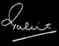

Our Commitment to you
Rotary Watches Limited is an award-winning worldwide brand of classic timepieces. The firm was founded in 1895 by Moise Dreyfuss in the Swiss town of La Chaux de Fonds. Rotary is still owned by the Dreyfuss family through Dreyfuss Group Holdings and, with Robert Dreyfuss at the helm, is the oldest family-owned and run Swiss watchmaker.
The founder, Moise Dreyfuss was dedicated to creating beautiful watches with timeless elegance. His attention to detail and insistence on first class personal service ensured the business grew quickly. Within 12 years of the founding of the company success led to the opening of a UK office.
In 1925 the now famous winged Rotary logo was introduced and after the war, under the leadership of Teddy Dreyfuss, the brand developed further, with innovative watches, sophisticated marketing and powerful advertising campaigns.
Rotary timepieces are now sold in over 35 countries throughout the world. Rotary specialises in designing affordably stylish timepieces, blending the ‘old with the new’ and the ‘contemporary with the classic’ to achieve a distinctive range of watches.
My great grandfather began making timepieces in a small workshop in a Swiss town called La Chaux de Fonds in 1895. For over a century we have preserved this heritage, crafting watches with the same quality materials and testing each watch to ensure it can withstand the rigours of everyday life. However, at Rotary we're careful not to get stuck in time! We continually invest in new product development, staff training and leading information technology to ensure we keep pace with the modern world.
I do hope you enjoy exploring our websites. Feel free to contact us if you would like to know more about Rotary watches.
Robert Dreyfuss
Chairman, Rotary Watches
Swiss Watchmaking since 1895